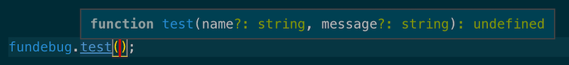
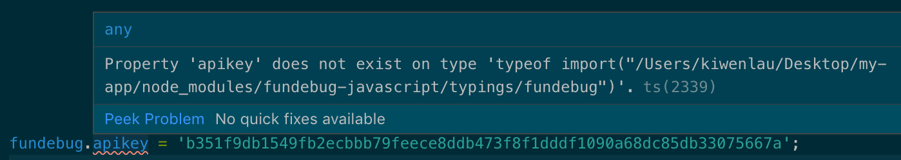

原文连接:https://www.cnblogs.com/fundebug/p/fundebug-javascript-2-0-0-support-typescript.html
摘要： 是时候支持TS了！

Fundebug前端异常监控服务
Fundebug提供专业的前端异常监控服务，我们的插件可以提供全方位的异常监控，可以帮助开发者第一时间定位各种前端异常，包括但不限于JavaScript执行错误以及HTTP请求错误。
并且，Fundebug支持Source Map还原，记录用户行为以及“录制”用户操作视频，帮助开发者快速复现BUG，提高Debug效率，欢迎大家免费试用~
Fundebug前端异常监控插件更新至2.0.0，全面支持TypeScript，为使用TypeScript的用户提供更好的编程体验。
关于TypeScript
想必大家都听说过TypeScript：
- Vue 3.0使用TypeScript重写
- Node.js作者使用TypeScript开发Deno，一个新的JavaScript后端语言
为什么很多人开始使用TS了呢？
因为JavaScript没有类型，而TypeScript有类型的，这样可以提高代码的正确性。另一方面，全面的类型推断意味着编辑器可以提供完备的代码补全和类型错误提醒，提高开发者的开发效率。
对TypeScript感兴趣的同学，不妨看看TS作者Anders Hejlsberg的视频Introducing TypeScript。Anders Hejlsberg是程序员界的传奇人物，C#与TypeScript都是由他设计主导，年近60依然还在编程，但是，他的视频非常浅显易懂！
全面支持TypeScript
TypeScript已经在业界应用了多年，且越来越流行，因此Fundebug的前端异常监控插件也应该全面支持TypeScript了：
- 所有的代码由JavaScript切换为TypeScript
- 严格遵守TSLint的语法规则
- 为fundebug的各个API编写严格的类型声明文件
对于TypeScript用户来说，在使用fundebug的API，比如fundebug.test()时，可以方便地看到类型提示：

可知，fundebug.test()有2个可选参数name与message，类型都是字符串。
新增fundebug.init()方法
为了兼容严格的TypeScript语法，我们新增了fundebug.init方法来配置各种属性，例如apikey：
fundebug.init({
apikey: "API-KEY"
});TypeScript用户在使用全局变量fundebug来配置各种属性时，则会看到报错：

这时，使用// @ts-ignore忽略下一行的报错即可：
// @ts-ignore
fundebug.apikey = 'API-KEY'不过，还是推荐大家使用fundebug.init方法进行配置。
fundebug.d.ts
fundebug.d.ts为Fundebug前端异常监控插件的类型声明文件：
// Type definitions for fundebug-javascript
// Project: https://www.npmjs.com/package/fundebug-javascript
// Definitions by: Fundebug <https://www.fundebug.com>
export as namespace fundebug;
export function init(config: IConfigs): undefined;
export function test(name?: string, message?: string): undefined;
export function notify(
name: string,
message: string,
options?: IOptions
): undefined;
export function notifyError(error: Error, options?: IOptions): undefined;
interface IConfigs {
apikey: string;
appversion?: string;
releasestage?: string;
user?: IUser;
metaData?: object;
callback?: ICallback;
setHttpBody?: boolean;
httpTimeout?: number;
filters?: object[];
silent?: boolean;
silentDev?: boolean;
silentResource?: boolean;
silentHttp?: boolean;
silentWebsocket?: boolean;
silentConsole?: boolean;
silentPerformance?: boolean;
sampleRate?: number;
domain?: string;
}
interface IUser {
name: string;
email: string;
}
type ICallback = (event: object) => void;
interface IOptions {
metaData?: object;
}参考
关于Fundebug
Fundebug专注于JavaScript、微信小程序、微信小游戏、支付宝小程序、React Native、Node.js和Java线上应用实时BUG监控。 自从2016年双十一正式上线，Fundebug累计处理了20亿+错误事件，付费客户有阳光保险、核桃编程、荔枝FM、掌门1对1、微脉、青团社等众多品牌企业。欢迎大家免费试用！
版权声明
转载时请注明作者 Fundebug以及本文地址：
https://blog.fundebug.com/2019/09/05/fundebug-javascript-2-0-0-support-typescript/